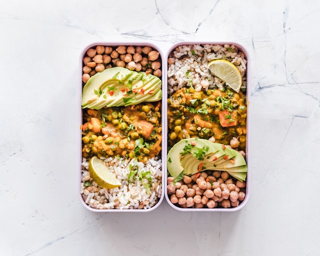

Results for "Avocado"
3 results found
Filter
Vegetarian
Protein
Dinner
Avocado sandwich with boiled egg
Under 1 hour

Fresh avocado salad with broccoli
Under 1 hour
Avocado and spinach pesto spagetti
Under 1 hour